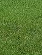

Club
The club started in the winter of 2017-18 when our very first set of equipment got built in the kantine at Unity. After a few years of playing and a global pandemic, we were officially founded as a folkeoplysende forening on January 29, 2022. We now play weekly together in downtown Copenhagen, and we regularly visit other countries for tournaments and trainings—especially Germany and Sweden.
This page hosts some of the history and official information about the club.
Being a “forening,” the club’s highest authority is the General Assembly. THis is where you, the members, propose, discuss, and vote on various issues. These issues are often presented by the board, who receive the GA’s mandate to run the club’s day-to-day organization. See Constitution below for more details.
Board of directors
The board takes care of the club’s day-to-day administration, finances, organization, and more.
Your 2023 board members!
2024 board members
Chairperson
Valkyrie SavageDon't wear it out. |
Vice-chairperson
Martin DeutschnameNicht anrufen bitte. |
Treasurer
Karel ProesmansBelgië is Bestgië. |
General member #1
Evan SavageWhat’s a conflict of interest? |
General member #2
|  |
Luca DansknavnI'm a ghost! |
Auditor
The club employs a semi-dependent auditor to double-check the treasurer’s cooking.
Jim who?Amateur chef. |
Code of conduct
We are a diverse group of people who are interested in having a good time. Here are some things about how we play:
- Everyone should have fun!
- We welcome and respect people of all nationalities, gender identities and expressions, religions, sexual orientations, abilities, etc.
- We stand up for each other against “assholes” and rude, aggresive, or disrespectful behavior.
- We hit gently and in a controlled manner.
- We resolve problems on the field. If this does not work, we discuss it with the board as soon as possible, who have the final say.
By hanging out with us, you agree that you’ll abide by these guidelines. Failure to comply with the code of conduct may lead to your membership being suspended temporarily or indefinitely or, at worst, having to play double-shorts for a month.
The club’s leadership consists of the board members listed above. Any board member is empowered to resolve disagreements and enforce the code of conduct on or off the field.
Constitution
The official Danish constitution with English translation is available here: Jugger CPH Vedtægter. Here follows a short summary in English.
Name and purpose
The club’s name is “Jugger Copenhagen” and its location is Copenhagen, Denmark.
The club’s purpose is to promote and practice the sport Jugger. This goal is to be achieved through regular meetings for training and organization purposes as well as through organizing, holding and participating in matches and tournaments.
Membership
The club accepts anyone as a member, who is aged 16 or above, has paid the membership fees and agrees with the club’s purpose.
Daily management of the club is handled by the Board of Directors, which is appointed during the general meeting.
The yearly membership fees are approved during the general meeting. Current membership info can be found at Join the club!
General meetings
The general meeting of members is the club’s highest authority. The board calls for the general meeting with a notice period of at least 14 days. Ordinary general meetings are held yearly no later than the end of March.
An extraordinary meeting can be called if a majority of the board wishes for it, or ⅓ of the members wishes for it. The summons with agenda must happen with at least two weeks of notice and no later than four weeks after it has been wished for.